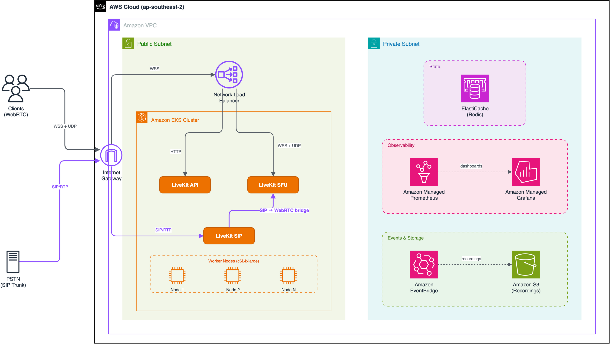

Building voice agents with LiveKit on Amazon EKS
LiveKit self-hosted deployment, networking, SIP telephony, and voice AI pipeline patterns
In this session
LiveKit on AWS provides streaming infrastructure for voice, video, and physical AI agents
Three core components: LiveKit Server (WebRTC SFU for low-latency media routing), SIP (bridge PSTN telephony into WebRTC rooms), and Agents (framework for building voice AI pipelines with STT, LLM, and TTS orchestration).
SFU architecture
Selective forwarding without transcoding. Low latency at scale. Each room fits a single node.
Embedded TURN
Built-in TURN server with integrated auth for firewall traversal. TCP/TLS fallback when UDP blocked.
Egress and ingress
Record to S3, stream via RTMP/WHIP, ingest SIP calls. Compositing and transcoding built in.
AI agent framework
Native integration for voice AI agents and real-time processing. STT/LLM/TTS pipeline orchestration.
AWS voice AI ecosystem — breadth and depth across the stack
AWS has partnerships across the voice AI ecosystem to help customers build voice agents. Third-party providers are available on AWS Marketplace or through the specialist GTM team.
WebRTC infrastructure


SIP trunk providers


DIY frameworks


No-code platforms


Real-time transcription


Foundation models


Voice synthesis
Testing, observability


Guidance for building voice agents on AWS

Deploying LiveKit on AWS
Self-hosted vs LiveKit Cloud
Self-hosted (EKS)
- Full infrastructure control
- Single region (DIY multi-region)
- No built-in analytics dashboard
- Webhooks + Prometheus only
- Each room fits one node
- EC2/EKS cost model
LiveKit Cloud
- Fully managed, elastic autoscaling
- Global mesh of media servers
- Session inspector + agent insights
- Turn-by-turn telemetry
- SOC 2, GDPR, CCPA, HIPAA
- Per-participant-minute pricing
Analytics and telemetry: what you need to build
Self-hosting gives you full flexibility to design an observability stack tailored to your requirements, integrating with the AWS services you already use.
Custom observability (self-hosted)
- Room and participant lifecycle webhooks
- Track published/unpublished events
- Egress/ingress lifecycle events
- Prometheus metrics (port 6789)
- Integrate with your existing stack (CloudWatch, Grafana, Datadog)
- Full control over retention and alerting
What you can build on top
- Session quality dashboard
- Per-participant metrics (jitter, loss)
- Call quality scoring (MOS)
- Session replay and inspector
- Usage analytics and billing integration
- Alerting on degraded sessions
*AWS and LiveKit can co-build solutions for select customers
LiveKit SIP: bridging PSTN to WebRTC rooms
How it works
- Separate service (livekit/sip container)
- Bridges SIP INVITEs into LiveKit rooms
- SIP callers appear as regular participants
- Dispatch rules route calls to rooms (PIN optional)
- Shares Redis with LiveKit server for session state
- Supports inbound and outbound calls
Best practices
- Restrict inbound trunks by provider IP/CIDR
- Use digest authentication on all trunks
- hide_phone_number: true for privacy
- On-device noise cancellation (e.g., Krisp) for AI agent calls
- Separate node group (host networking required)
- SRTP for encrypted media where supported
SIP + LiveKit agents: AI-powered phone calls
Modern telephony providers offer a SIP trunk to facilitate easy integration to voice agents. We recommend selecting a provider that integrates directly to the orchestration layer.
Create a SIP trunk on your telephony provider
Configure a SIP trunk in Twilio, Telnyx, or Amazon Connect* (External Voice Transfer, select customers only). Set the trunk endpoint to your LiveKit SIP service IP.
Purchase a phone number (DID)
Associate the number with your SIP trunk. Callers dial this number to reach your LiveKit application.
Configure LiveKit SIP endpoint
Create an inbound trunk (IP allowlist + auth) and dispatch rule (routes calls to rooms). SIP participant auto-joins as a standard room participant.
LiveKit agent handles the call
Agent subscribes to room, processes audio via STT/LLM/TTS pipeline. On-device noise cancellation (e.g., Krisp) recommended for telephony audio.
EKS deployment: SIP service runs as a separate DaemonSet with host networking. Ports: UDP 5060 (SIP signaling) + UDP 10000-20000 (RTP media). Dedicated node group recommended.
Existing CCaaS platforms may not offer direct SIP trunk integration to external voice agents. In this case, it is perfectly valid to run AI voice agents on a separate number alongside your human call centre — a parallel deployment gives you independent scaling, faster iteration, and clear cost attribution.
WebRTC on EKS requires careful network planning
WebRTC networking on EKS
- Host networking required - LiveKit binds directly to node ports. Pod networking adds NAT that breaks ICE.
- One pod per node - host port binding means no colocated LiveKit pods. Use DaemonSet.
- No Fargate, no private clusters - additional NAT layers are unsuitable for WebRTC traffic.
- UDP 50000-60000 inbound - security groups must allow this range. Two ports per participant.
- use_external_ip: true - STUN-based public IP discovery required in cloud environments.
- Compute-optimized - c6i/c7i instances with 10Gbps+ enhanced networking.
Port architecture and load balancer mapping
| Service | Port | Protocol | Load balancer | Notes |
|---|---|---|---|---|
| Signal/API | 7880 | TCP (WSS) | ALB or NLB | SSL termination at LB |
| RTC fallback | 7881 | TCP | NLB (TCP) | When client UDP blocked |
| Media (ICE) | 50000-60000 | UDP | Direct to node | 2 ports per participant |
| TURN/TLS | 5349 | TCP | NLB (TCP/TLS) | 443 if no LB in front |
| TURN/UDP | 3478 | UDP | NLB (UDP) | Also serves as STUN |
| SIP signaling | 5060 | UDP | Direct to node | SIP service (separate pod) |
| SIP RTP media | 10000-20000 | UDP | Direct to node | SIP audio streams |
| Prometheus | 6789 | TCP | Internal only | Metrics scraping |
NLB vs ALB for LiveKit
Network Load Balancer
- Required for TURN/TLS (TCP passthrough)
- Required for TURN/UDP (UDP listener)
- Required for RTC TCP fallback
- Layer 4 - supports TCP and UDP
- Preserves client IP (no SNAT)
- Sub-millisecond latency
- Static IPs for allowlisting
Application Load Balancer*
- Only for signaling WebSocket (7880)
- Cannot handle UDP traffic
- Cannot handle TURN traffic
- Cannot handle RTC TCP fallback
- Adds HTTP parsing latency
- Value: WAF integration
- Value: path-based routing
*ALB is referenced in LiveKit documentation for signaling, but we recommend NLB for all traffic to simplify the architecture and avoid split load balancer management.
Scalability and autoscaling on EKS
Capacity per node
- ~50-100 concurrent participants per c6i.4xlarge (16 vCPU, 32 GB)
- Each room fits one node — rooms cannot span multiple SFU instances
- 2 UDP ports per participant — port range limits max participants per node
- CPU-bound — packet forwarding, SRTP encryption, not transcoding
Autoscaling for spikes
- Karpenter — provisions new nodes in ~60-90s (faster than Cluster Autoscaler)
- Pre-warm buffer — keep 2-3 idle nodes ready for instant room creation
- Custom metrics — scale on active rooms/participants, not CPU alone
- Redis routing — new rooms assigned to least-loaded available node
Planning formula: For N concurrent calls, provision N nodes minimum (1 room = 1 node). A 10-node cluster with c6i.4xlarge handles ~500-1000 concurrent participants across ~10 simultaneous rooms. Use Karpenter with a pre-warm pool to absorb traffic spikes within 90 seconds.
Cascaded pipeline challenges and scalable patterns
STT → LLM → TTS pipeline
Each stage introduces latency, concurrency limits, and failure modes that compound across the pipeline.
Speech-to-Text (STT)
Converts audio stream into text for LLM processingChallenges
- Concurrency limits — providers cap at 50-150 concurrent streams
- False turn signals — silence-based VAD triggers on natural pauses
- WER degradation — telephony noise and accents increase errors
Solutions
- Smart turn models — use transformer-based end-of-turn detection that understands semantic context, not just silence duration (LiveKit Agents)
- STT-integrated turn detection — VAD bundled into the STT model itself
- On-device noise cancellation (e.g., Krisp) for telephony pre-processing
- Hybrid stream/batch — stream for conversation flow, batch-verify critical fields (names, amounts) before tool execution
Large Language Model (LLM)
The "brain" — reasoning, tool use, and response generationChallenges
- Context thrashing — 39% performance drop as history grows
- Tool overhead — reasoning latency scales with tool count
- Throttling at scale — TPM/RPM limits during concurrent sessions
Solutions
- AgentCore building blocks — tool gateway, sub-agent orchestration, and managed memory
- Session segmentation — phase-specific prompts and minimal toolsets
- Filler phrases — "Let me check that..." bridges latency
Text-to-Speech (TTS)
Synthesizes natural-sounding audio from LLM outputChallenges
- Flat prosody — wrong emphasis makes agent sound robotic
- Chunk artifacts — byte-boundary splits break speech rhythm
- Interruption waste — pre-synthesized audio discarded on barge-in
Solutions
- Context-aware TTS — adaptive pacing and tone from content
- Sentence-aware chunking — split at clause boundaries
- Immediate cancellation — stop synthesis on barge-in
Interruptions, multi-turn, and session management
Interruptions and barge-in
- Smart turn detection — LiveKit's transformer model reduces false interruptions by 39% using semantic understanding, not just silence
- STT-integrated turn detection — newer STT models embed turn-taking intelligence directly, emitting StartOfTurn/EndOfTurn events with sub-300ms latency (e.g., VAD bundled with STT)
- Backchannel filtering — ML model distinguishes "uh-huh" from genuine interruptions (LiveKit Agents 1.5+)
- Graceful cancellation — stop TTS playback, flush LLM generation, re-listen
Session segmentation (advanced)
- Problem — monolithic sessions degrade 39% over extended multi-turn interactions (context thrashing)
- Pattern — segment conversations into logical phases (auth → account → inquiry), each with its own session, prompt, and toolset
- Handoff — transfer conversation summary (not full history) between segments to preserve coherence
- Benefit — minimal tool surface per phase reduces reasoning overhead and latency
Prosody and natural speech
- Context-aware delivery — modern TTS engines adjust pacing, tone, and expression based on semantic content
- SSML control — use <prosody>, <emphasis>, <break> tags for fine-grained control where supported
- Sentence-aware chunking — split at clause boundaries, not arbitrary byte limits, for natural rhythm
- Filler phrases — bridge latency gaps with "Let me check that..." to maintain presence
Multi-turn context management
- Context window exhaustion — payloads silently truncated when they cross limits; critical state lost
- Stateful caching — persist tool results in memory to prevent redundant fetches across turns
- Summarization checkpoints — periodically compress history while preserving key facts
- Parallel tool calls — execute independent operations concurrently to reduce cumulative latency
Solving the hardest problem in voice AI: knowing when someone is done talking
Silence-based VAD plagues the industry with false interruptions and awkward pauses. The LiveKit Turn Detection plugin uses a transformer-based model that understands semantic context — not just silence duration — to determine when a speaker has finished their turn.

Guardrails in streaming voice architectures
Traditional text guardrails require buffering full responses — breaking real-time conversational flow. Voice agents need a different approach.
Why traditional guardrails break
- Buffering kills latency — text must be fully generated before scanning, adding 200-500ms per turn
- Audio already playing — TTS begins before the full response exists; you cannot "unsay" what was streamed
- Pauses >400ms break immersion — users shift from "conversation" to "query-response" mental model
- Inline scan + voice pipeline — total latency can hit 2-3s, firmly in "the bot is broken" territory
Guardrails at the seams
- Prompt engineering — system prompts define persona boundaries, topic scope, and refusal behaviour (zero latency)
- LLM-native safety — rely on model's built-in RLHF/Constitutional AI training for conversational turns
- Tool-call validation — apply guardrail checks only at tool boundaries before execution (e.g., verify parameters, confirm amounts)
- Minimal tool surface — restrict available tools to exactly what the use case requires; a booking bot doesn't get send_email
- Async transcript monitoring — post-hoc moderation on completed segments for compliance logging and escalation triggers
Voice agent evaluation — example metrics
Indicative targets for a production voice agent. Adjust thresholds based on use case complexity and user expectations.
| Dimension | Metric | Example target | Pipeline stage |
|---|---|---|---|
| ASR accuracy | WER (Word Error Rate) | <5% production | STT |
| Latency | End-to-end response time | <1s (good), <1.5s (acceptable) | End-to-end |
| Latency (component) | STT / LLM / TTS split | 300ms / 500ms / 200ms | Per stage |
| Task success | TSR (Task Success Rate) | >85% | LLM |
| Voice quality | MOS (Mean Opinion Score) | >4.0 (scale 1-5) | TTS |
| Safety | Hallucination rate | <1% production | LLM |
| Resolution | FCR (First Call Resolution) | 75-85% | System |
| Containment | AI-handled / Total calls | 75-85% (mature) | System |
| Experience | EVA-X (composite) | Naturalness + conciseness + turn-taking | End-to-end |
Example alert thresholds: WER P50 >8% (10min window) | E2E P95 >1.5s (5min) | TSR <80% (30min) | Hallucination >2% (30min)
Reference frameworks: EVA (ServiceNow) — conversation quality scoring | EVA-Bench (HuggingFace) — open benchmark | Hamming 4-layer — latency, accuracy, UX, business
AWS Generative AI Innovation Center (GAIIC) — hands-on advisory and prototyping engagements
The Innovation Center provides flexible engagement models designed around your needs. We offer advisory services for technical and strategic guidance, hands-on engagements for custom solution development, and forward deployment engineering where our teams embed with yours for full-cycle AI implementations.
Recommended deployment architecture
LiveKit on Amazon EKS — public subnet deployment
WebRTC requires direct UDP connectivity between clients and media servers. Public subnet placement avoids NAT traversal overhead and enables sub-100ms media delivery without TURN relay. For telephony, the SIP service receives inbound calls and converts RTP media streams into the LiveKit SFU room, bridging PSTN callers into the same session as WebRTC clients.

TURN-assisted architecture (private subnet)
When security policy prohibits public subnet placement, LiveKit can operate in a private subnet using TURN relay for all media traffic.
Recommendation
Use public subnet for production voice agents. Reserve TURN-only for compliance-constrained environments where private subnet placement is mandated.
Key difference
No direct UDP path from clients to SFU nodes. All media relayed through NLB/TURN on port 5349 (TLS). SFU nodes have no public IPs.
Trade-offs
- +50-100ms latency — all media relayed
- 2x egress bandwidth — TURN relays every packet
- NLB is critical path — single point of failure
Key takeaways
Voice agents are a pipeline — scale each component independently
STT, LLM, and TTS each have different concurrency limits, latency profiles, and failure modes. Architect for independent scaling and graceful degradation at each stage.
Map challenges to the right pipeline stage
Barge-in and false turns → STT/VAD. Context thrashing and hallucination → LLM. Flat prosody and chunk artifacts → TTS. Solving in the wrong layer wastes effort.
WebRTC on EKS demands public subnet + host networking
No Fargate, no pod networking, NLB not ALB. Plan for 1 room = 1 node, scale with Karpenter and pre-warm pools for spike absorption.
Self-hosting means building your own observability
LiveKit Cloud gives you session inspector and turn-by-turn telemetry for free. Self-hosted requires a custom webhook + Prometheus + Grafana pipeline from day one.
Target <1s end-to-end — every millisecond compounds
Use transformer-based turn detection (not silence timers), session segmentation, sentence-aware TTS chunking, and filler phrases to stay under budget.
Thank you
Questions?
Daniel Wirjo | Solutions Architect, Frontier AI | AWS
Sagar Murthy | GTM Specialist, Agentic Frameworks | AWS
Capacity planning — per-node sizing
| Metric | Guidance |
|---|---|
| Bottleneck | Down-track fan-out (publishers x subscribers x tracks) |
| Per-core capacity | ~400 down-tracks per CPU core |
| Single node (c6i.2xlarge, 8 vCPU) | ~1,600+ concurrent down-tracks, no quality degradation |
| 4-node cluster (c6i.2xlarge) | 15,000–20,000 concurrent users per region (~60% CPU) |
| Room pinning | 1 room = 1 node. Scaling adds rooms, not participants per room. |
| Cost estimate (Spot) | ~$800–1,200/month per region for 15K–20K concurrent users |
| Critical requirement | hostNetwork: true — kube-proxy NAT adds 5–15ms latency |
Sources: LiveKit Engineering Blog (multi-core SFU benchmarks), LiveKit Docs (deployment guidance), KubeAce (Kubernetes production benchmarks on AWS)